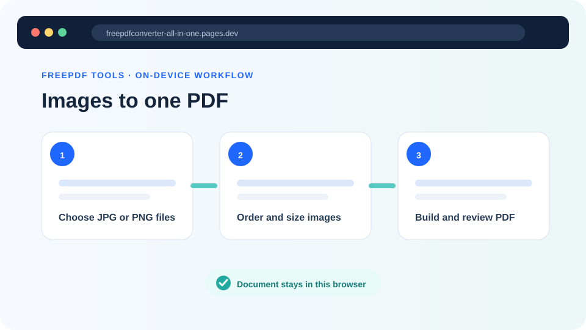
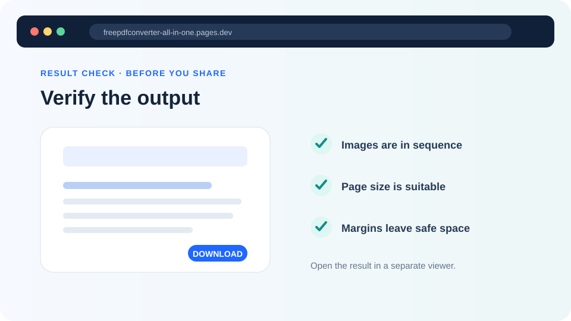

How to convert JPG or PNG images to one PDF
Arrange photos, screenshots or scanned pages in the right order and choose a page size that suits sharing, printing or submission.
Updated August 11, 2026 · By FreePDF Tools · 6 minute read


Should the source image be JPG or PNG?
JPG is usually the efficient choice for photographs, receipts photographed with a phone and scanned pages containing natural colour variation. PNG is lossless and often better for screenshots, diagrams, line art and images with small text or sharp interface edges. You can mix both formats in one PDF.
Converting a low-quality image to PDF does not restore missing detail. Crop, rotate and check each source image before creating the document. Keep the originals in case you need to correct one page later.
Choose A4, US Letter or Fit to image
| Page setting | Best for | What happens |
|---|---|---|
| A4 | International office, school and application documents | The image is centred and scaled to fit an A4 page |
| US Letter | North American office and submission workflows | The image is centred and scaled to fit a Letter page |
| Fit to image | Photos and screenshots that do not need standard paper dimensions | Each PDF page follows its source image's proportions |
A4 or Letter gives every page a consistent outer size even when the source images have different shapes. Fit to image avoids large paper margins, but page dimensions can vary from one image to the next.
How to make one PDF from several images
- Open JPG / PNG to PDF.
- Select the images. Each image will become one PDF page.
- Use the arrow controls to place the images in the correct reading order.
- Choose A4, US Letter or Fit to image.
- Enter a useful output filename and select Create PDF.
- Open the downloaded file and check image direction, order and legibility.
Turn your images into one PDF
Mix JPG and PNG files, reorder them and create the document locally.
Image quality, resizing and output size
Modern phone photos may be far larger than a normal PDF page needs. To protect browser memory, the tool reduces images whose longest side exceeds 3,600 pixels while keeping their proportions. JPG images are encoded at high quality; PNG images remain PNG. The result should be suitable for common viewing and submission tasks, but specialist print production may require a colour-managed desktop workflow.
Large PNG screenshots can produce bigger PDFs than similarly sized JPG photographs. If the finished document is too large, start with sensibly cropped images, avoid repeated copies and use JPG for photo-heavy pages. Do not repeatedly convert the same page between JPG and PDF, because each lossy JPG re-encoding can reduce quality.
Common image-to-PDF problems
| Problem | What to try |
|---|---|
| Pages are in the wrong order | Reorder the numbered image list before creating the PDF. |
| An image is sideways | Rotate the source image first, or use Rotate PDF on the finished page. |
| Text looks soft | Use the original screenshot or scan, avoid enlarging a small image and prefer PNG for sharp text-heavy graphics. |
| The browser becomes slow | Use fewer images per batch, close unused tabs or move from a phone to a laptop. |
| The output has unwanted margins | Choose Fit to image instead of A4 or Letter. |
Are the images uploaded?
No. Image decoding, resizing and PDF creation for this tool happen locally in the browser. The selected image bytes do not need to be uploaded to our application server. On a shared device, remember that the final PDF is still saved to the normal Downloads location.